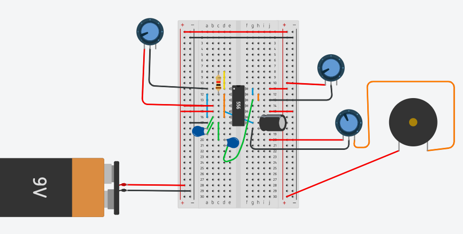

HOME

Perfboard Update
After creating my virtual breadboard, I moved on to creating the perfboard. Creating the perfboard came with many challanges as I never created a true breadboard, so it took me some time to become comfortable with the components. However, I jumped right in and began soldering. Through the soldering process I had some components in the wrong position which required some desoldering, but soon I had a complete perfboard and had gotten the hang of soldering. Yet, my perfboard still did not work. This began my long process of debugging the board. With the help of my teachers, we found that there were some holes in the circuitboard that had to be bridged and one wrong component. After I fixed these mistakes, I finally had a complete and working perfboard. This process taught me the importance of paying close attention to detail. Because the components are so small, it is neccesary to be very exact and percise when soldering and debugging.